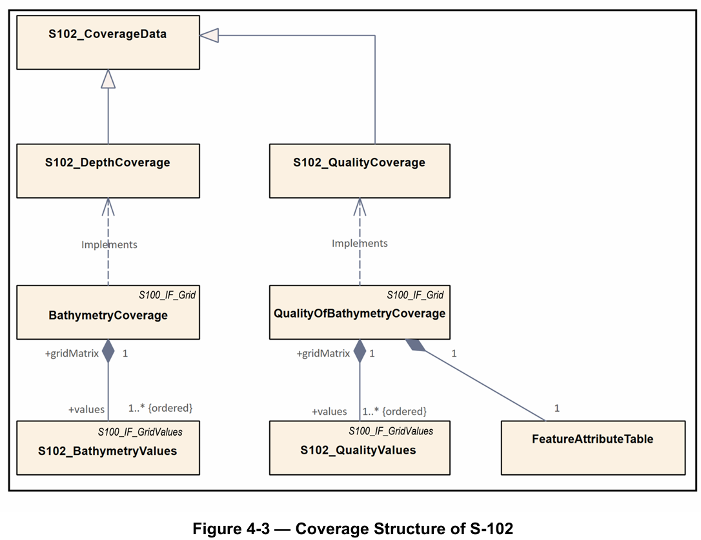

S-102 수심 표면
Bathymetric Surface
S-102는 IHO S-100 프레임워크 기반의 수심 표면 제품 사양으로, 고해상도 격자 수심 데이터를 전자해도(ENC)와 함께 제공합니다.
표준 개요
S-100 기반 수심 표면(Bathymetric Surface) 제품사양 표준임. 정식 명칭은 Bathymetric Surface Product Specification이며, Edition 3.0.0은 2024년 12월 발행됨.
해저면을 정규 격자(regular grid) 형태의 디지털 수심 표면으로 표현하는 제품을 정의함. 수심 표면 제품에 필요한 콘텐츠 모델, 인코딩 구조, 표현(portrayal), 교환 파일 형식을 함께 규정함. 수심값과 품질·출처 관련 정보를 함께 다루며, S-100 기반 ECDIS 항해 지원의 핵심 요소로 활용됨. Digital Elevation Model(DEM)로도 설명됨.
적용목적 및 대상
목적
- 고해상도 수심 정보를 격자 형태로 제공하여 안전항해를 지원함
- S-100 기반 항해 시스템에서 safe passage, precise berthing and mooring, route planning을 지원하는 수심 정보 제품으로 사용됨
- 수심값 외에 선택적 uncertainty와 quality metadata를 함께 제공하여 데이터 활용성과 신뢰성 판단을 지원함
대상
- 해수면 아래 지형을 수심 격자 형태로 표현하는 bathymetric surface 데이터 제품
- 적용 공간 범위: 바다·하천·호수 등 수역 전반
- S-100 기반 ECDIS 및 항해 시스템, 수로기관 및 격자 수심 데이터 생산자, 항해 시스템 개발자와 최종 사용자 시스템
버전 업데이트 타임라인
- 2024.07 / Version 3.0.0 — cell area-based approach 반영, 하나의 제품 내 multiple vertical datums 지원 추가, QualityOfSurvey → QualityOfBathymetryCoverage 변경, S-100 Edition 5.2.0 정렬 반영, 여러 부속서 제거
- 2023.04 / Version 2.2.0 — 공간 표현 방식 regular grid(DCF 2) → feature oriented regular grid(DCF 9) 변경, QualityOfSurvey feature 추가, S-100 Part 17 및 Part 10c 정렬
- 2022.05 / Version 2.1.0 — exchange catalogue 파일명 CATALOG.XML로 수정
- 2021.03 / Version 2.1.0 — Navigation Only 범위 제한 반영, metadata 별도 ISO 형식 파일로 저장
- 2020.11 / Version 2.1.0 — 2.1 초안 작성, track changes 및 tiling 옵션 제거 방향 반영
- 2019 / Version 2.0.0 — HSSC 및 S-102 PT 의견 반영, 주요 조항 및 부속서 수정
- 2018 / Version 2.0.0 — S-100 v4.0.0 및 Part 10c 개발 방향에 맞춰 정렬
- 2012.04 / Version 1.0.0 — S-102 최초 승인판 발행
모델 구성
수심 정보를 격자형 coverage로 표현하는 구조를 사용함. 제품은 크게 두 가지 feature type으로 구성됨.
BathymetryCoverage: 각 grid cell에 대한 depth와 선택적 uncertainty 값을 포함함QualityOfBathymetryCoverage: 각 grid cell이 참조할 수 있는 품질·출처 메타데이터 id를 제공함. 실제 상세 품질 정보는featureAttributeTable에 기록됨

데이터셋은 정규 격자(regular grid) 기반으로 구성됨. 가장 남서쪽 격자점(grid point)을 기준으로 위치 참조(georeferencing)가 이루어지며, 격자셀(grid cell)은 grid point를 중심으로 배치됨.

하나의 S-102 제품은 HDF5 계층 구조로 인코딩됨. Root Group 아래에 metadata, feature information, feature container, values dataset 등이 배치됨. 수심값(depth)과 품질 정보(quality metadata)가 분리되면서도 동일 격자 체계 안에서 함께 사용되도록 설계됨.

심볼, 테스트데이터셋 예시
Portrayal
Portrayal Catalogue를 통해 수심 표면의 시각화 체계를 정의함. 수심대 색상 표현과 음영 표현 방식을 사용함.


격자 구조 및 데이터셋 예시


활용 사례
OpenS100: Open Source S-100 Viewer Project
S-102 데이터를 포함한 S-100 기반 데이터를 시각화하는 오픈소스 뷰어임. 표준 데이터의 실제 표출 환경을 제공함.